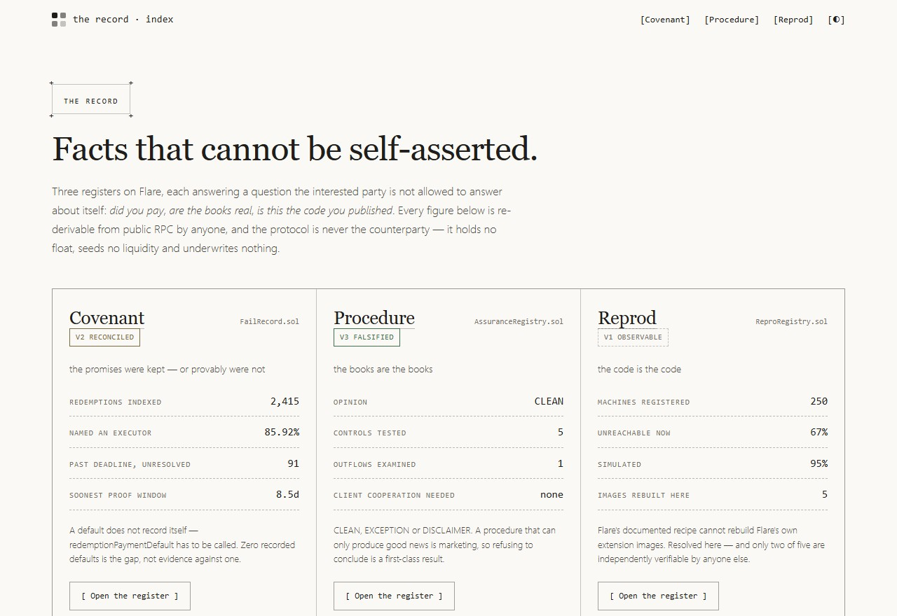
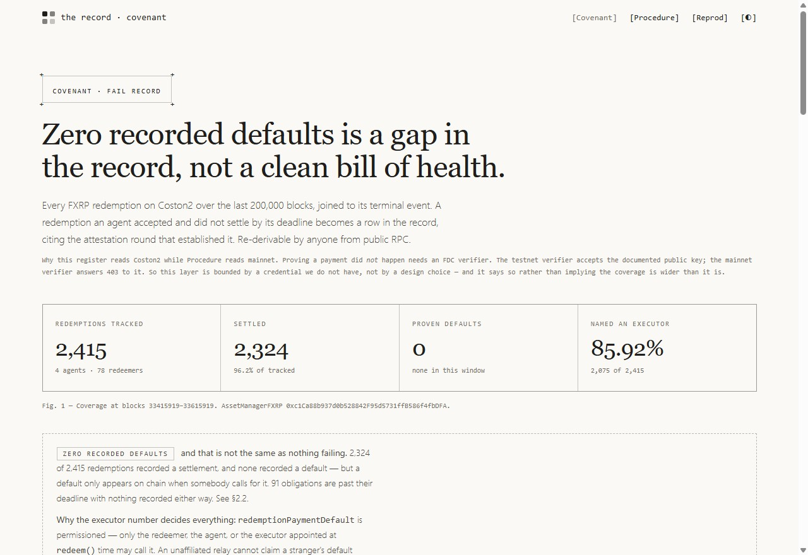
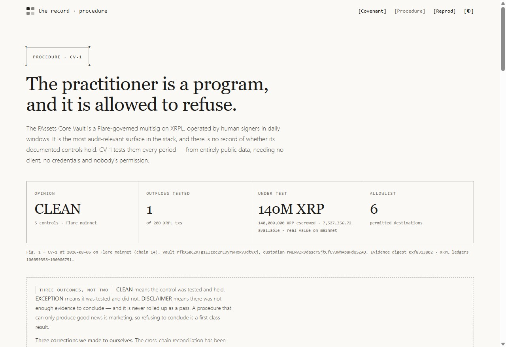
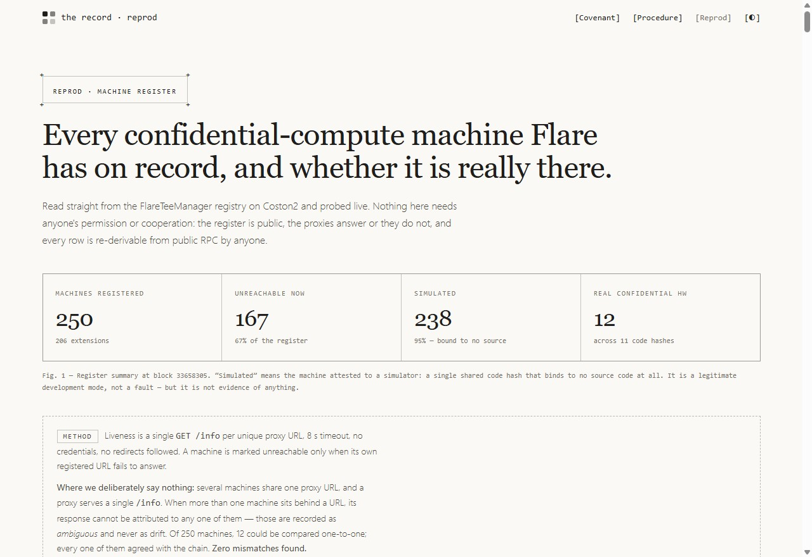
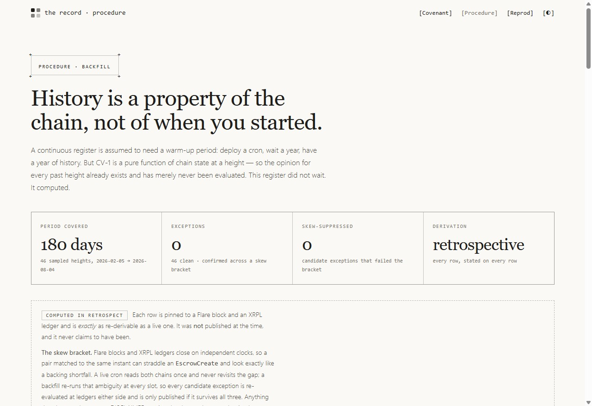
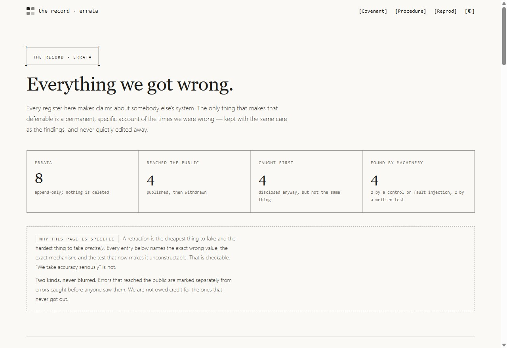
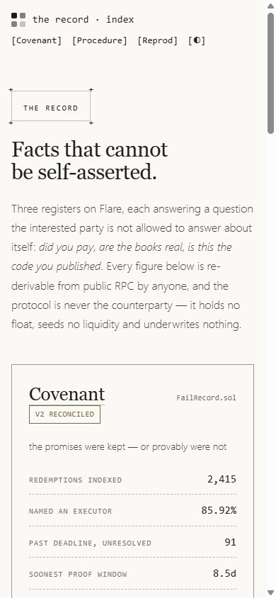
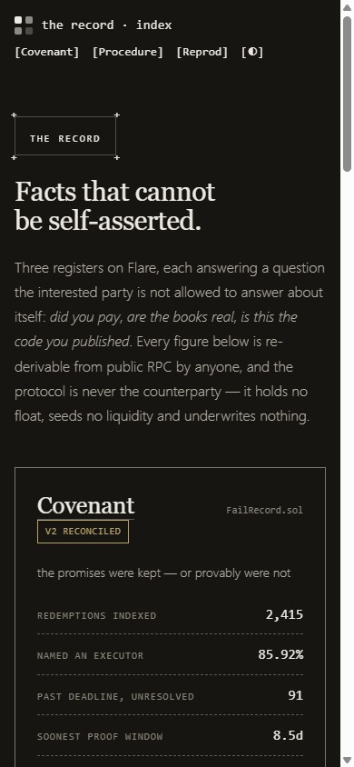

The whole product, in the time a demo video would take.
14 numbered passes over every surface this project offers — each
page, each instrument, each contract — with the evidence beside it. Every figure on this
page is read from the register that produced it, so if a register moves, this page moves with
it. Including this sentence: writing the count by hand is how the index came to say
Six errata over a register of seven.
Prefer to watch? The
66-second film covers the same argument, and is
rendered from these same figures rather than narrated over them.
Surfaces
17
6 pages, 7 JSON endpoints, 3 badges, 1 spec
Tests
614
544 TypeScript + 70 Solidity, clean clone
Errata
8
4 reached the public
Upstream PRs
2
into Flare's own repositories
The walkthrough
Every feature, and what proves it works
01
The index — three registers, one thesis
public page
Every figure on this landing page is read from the register that produced it at build
time. Nothing is retyped, which is why the three cards can never quietly disagree with the
pages they link to.

Fig. 1 — the live index. Covenant carries 2,415
indexed redemptions, Procedure an opinion of CLEAN, Reprod
268 registered machines.
Covenant — did the redemption agents actually pay?
register · V2 reconciled
Indexes every FXRP redemption and asks Flare's Data Connector to prove a payment did
not happen. The verifier is required to refuse redemptions the
chain already recorded as performed — that refusal test is what caught our own false
accusation of 93 agents.

Fig. 2 — 2,415 redemptions indexed,
85.92% named an executor,
91 past deadline and unresolved.
Unresolved is not unpaid. A default does not record itself —
redemptionPaymentDefault has to be called by someone. Zero recorded defaults is
the gap this register measures, not evidence that none occurred.
CV-1 runs 5 controls against the FAssets Core Vault,
reconciling Flare's escrowedFunds against the vault's actual XRP Ledger
escrow objects — two chains that cannot move each other. It can return CLEAN,
EXCEPTION or DISCLAIMER; refusing to conclude is a first-class result.

Fig. 3 — running against Flare mainnet,
opinion CLEAN, anchored to Flare block
— and XRPL ledger
—.
A monitor that has only ever printed CLEAN is indistinguishable from one that
cannot print anything else, and this project shipped exactly that failure once. The
red run forks Coston2, corrupts a single storage slot, and re-runs the identical procedure.
$pnpm --filter @therecord/procedure redrun--- GREEN - forked chain, no fault ---CLEAN C1 Outflow destination allowlist
CLEAN C2 Control preconditions
CLEAN C3 Escrow backing
CLEAN C4 Liquid backing
CLEAN C5 Available-funds wedge
OPINION: CLEANinjecting fault: one storage slot, escrowedFunds raised--- RED - same procedure, corrupted escrow figure ---CLEAN C1 Outflow destination allowlist
CLEAN C2 Control preconditions
EXCEPTION C3 Escrow backing
CLEAN C4 Liquid backing
CLEAN C5 Available-funds wedge
OPINION: EXCEPTIONthe control fires. CLEAN to EXCEPTION on a single corrupted slot.
Exactly one control moves. The script exits non-zero if C3 stays CLEAN
and it runs in CI, so a control that quietly stops being able to fail breaks the build. This
is the whole reason the register claims V3 rather than V2 — and the tier
lapses after 30 days, because a falsification from six months ago says
nothing about the code running today.
05
Reprod — is this the code you published?
register · V1 observable
Every confidential-compute project says don't trust us, check the code hash. It
is a good instruction and it is currently unexecutable, because nothing turns 32 bytes into a
fact. Reprod measures how much a hash actually identifies, in bits.

Fig. 4 — 268 machines,
81% unreachable,
95% attested to a simulator.
$pnpm --filter @therecord/reprod provenance --registry
most-shared hash
0x194844cf417dde867073e5ab7199fa4d21fd82b5dbe2bdea8b3d7fc18d10fdc2
carried by 254 machines (94.8%) under 47 independent owners to 0.08 bits
rebuilds we performed 5
that match an on-chain hash 0
Nobody did anything wrong. Simulated attestation is explicitly
permitted and a shared constant is exactly what simulation is defined to emit. This measures
the hash, not the operator — no machine owner is named anywhere in the
repository, and NOT_A_MEASUREMENT is derived from how many owners share a value,
never from a list of known constants.
doctor — what is actually wrong, and how to fix it
instrument · live probe
The one command an operator would use on a Tuesday. It live-probes every registered
machine and returns the blocker, the fix, and the source for the fix.
$pnpm --filter @therecord/doctor doctor --worst 3167 of 250 machines have at least one blocker
-- 0xE3829862Ef972e1dfAB338643c4041a6a1F00b20 --
extension 65832 - PRODUCTION - TEST_PLATFORM
verdict: BLOCKER[x] The registered URL belongs to a tunnel that has moved
fix: Restart the tunnel, then re-register the machine.
[.] NOTE This machine is attested to a simulator
Plain-English summaries are model-generated and labelled “not evidence”
on every single one; the verdict itself comes from probes. Accepts a teeId, an extension id,
or a host — it answers to every identifier it prints.
07
verify — rebuild an opinion with the network unplugged
instrument · offline
Takes a published evidence pack, replaces fetch with a function that throws,
and rebuilds the opinion from the recorded reads alone. A missing read fails the rebuild
rather than silently substituting a default, so a pack is either sufficient or it is
rejected. If you run one command, run this one.
$pnpm --filter @therecord/procedure verify
address intact - the bytes still hash to their stated address
anchors flare block — - xrpl ledger —
OPINION CLEANverified offline - no network was contacted
08
drift — has the chain moved past our own numbers?
instrument · can embarrass us
The freshness badge measures age, and age is a bad proxy for correctness: a scan
can be four hours old and already wrong. This asks the only question that matters, and blocks
the publish on MATERIAL — and on UNKNOWN, because failing to
check is not evidence that nothing moved.
$pnpm --filter @therecord/reprod driftIMMATERIAL snapshot 268 - live 2702 added since the snapshot was taken, 0.8% of the fleet. The register'sclaims are ratios and do not turn on this, so it is disclosed ratherthan treated as an error.
The 2% materiality threshold exists because a strict-equality gate blocked a publish over
a single machine appearing within twenty minutes. A gate that cries wolf gets switched off,
and then it protects nothing. This command exists because of
E-008.
09
The backfill — history computed, not waited for
public page · retrospective
A continuous register is assumed to need a warm-up: deploy a cron, wait a year, have a
year of history. But CV-1 is a pure function of chain state at a height, so the opinion for
every past height already exists and has merely never been evaluated.

Fig. 5 — 46 heights on
Flare mainnet with 0 exceptions;
the same procedure over Coston2 reports 42.
Every row is labelled retrospective on the row itself. The Coston2 exceptions are
a real finding: getAllowedDestinationAddresses() returned an empty list for the
Core Vault's first three months, so the outflow control would have passed vacuously that
entire window. Anyone whose monitoring began this summer sees a healthy allowlist and has no
way to learn it happened.
Every register here makes claims about somebody else's system. The only thing that makes
that defensible is a permanent, public account of the times we got it wrong. A retraction is
the cheapest thing to fake in general and the hardest to fake specifically: each
entry names the exact wrong value, the mechanism, and the test that now makes it
unconstructable.

Fig. 6 — 8 entries,
4 of which reached the public before being withdrawn.
Three of the 8 are the same error in different clothes: a comparison
between numbers that were never defined to be equal, or that could never disagree. Every one
produced confident, well-formatted, meaningless results. Open this page first
— it is the part nobody else can copy, because copying it requires having been wrong in
public.
The paper palette is a choice rather than an accident of the reader's operating system,
so the pages render light by default and carry an explicit toggle. Both themes are contrast-
checked against the WCAG AA floor by a test that parses the rendered stylesheet, not a copy
of the token list.

Fig. 7 — 390 px. No page scrolls sideways at any width; wide tables and
command blocks scroll inside their own container.

Fig. 8 — the same page with the theme toggled. Verdict states are
carried by border style as well as colour, so the registers survive being printed in
greyscale.
12
The distribution layer — JSON, badges, and a fault spec
17 public surfaces
A register nobody can consume is a website. Every verdict is available as versioned JSON
and as an embeddable badge that reports itself STALE past 36 hours, and the fault
catalogue ships as machine-readable data.
Live SVGs, served from this domain and rendered by your browser right
now — not screenshots of badges. 9 faults and
3 declared known uncaught are
published at /spec/faults.json; the things a procedure cannot detect are part of
what the procedure means.
lapse() is permissionless. If a reporter goes silent past
the grace window, any stranger can write the adverse record — so going quiet is not an
escape from the register, it is an entry in it.
14
Reproduce all of it from a clean clone
614 assertions
Nothing above needs our server, our keys, or our permission. The evidence is committed,
the commands are in the README, and the suite carries its own preconditions.
That command used to fail on a clean clone — four failures and
82 silently skipped tests, every accessibility and contrast assertion among
them — because CI rendered the pages before testing and the README did not. Our
continuous integration carried a precondition the published instruction did not, which is
precisely the defect we filed upstream against Flare's own reproducible-build recipe. A test
now reads the README and fails if any command it prints is not real.
Stated rather than hidden
What this will not do
Zero real defaults exist on FXRP todayCovenant's failure path is
exercised by deliberate fault injection, not by live defaults. We say so rather than implying
otherwise.
Covenant cannot be backfilledFDC proofs expire at
lutlimit (~14 days), so historical rounds cannot be re-proven at any price. The
record states this instead of quietly omitting the layer.
Three faults are declared uncaughtThey ship in
faults.json as data, not in a footnote.
No users yetThis is a register weeks old with no distribution
history. The badge and the API exist precisely because that is the gap.
A tier is not a safety ratingV3 means the check has been proven able
to fail — not that nothing will. It lapses, and the tier can go down, ours included.